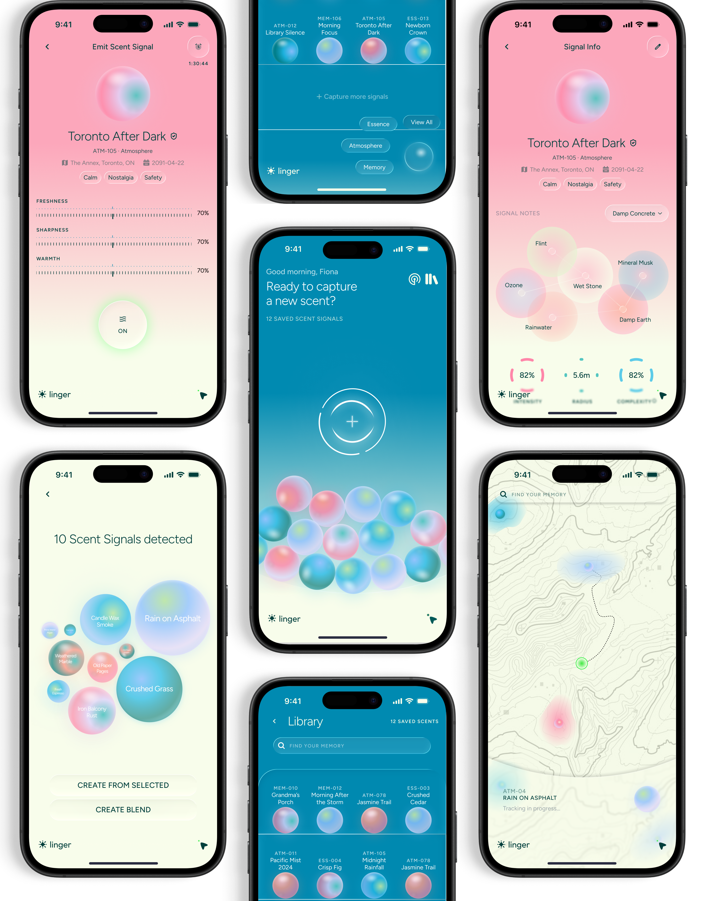

2026
Speculative Design
UX/UI Design
Designathon
Impact: Designed a multi-feature scent-mapping app prototype (library, navigation, and environment scanner) in 83 hours at FigBuild 2026 by Figma, with a speculative wearable integration concept.
Linger
A speculative wearable and mobile ecosystem for capturing, archiving, and navigating olfactory experiences.